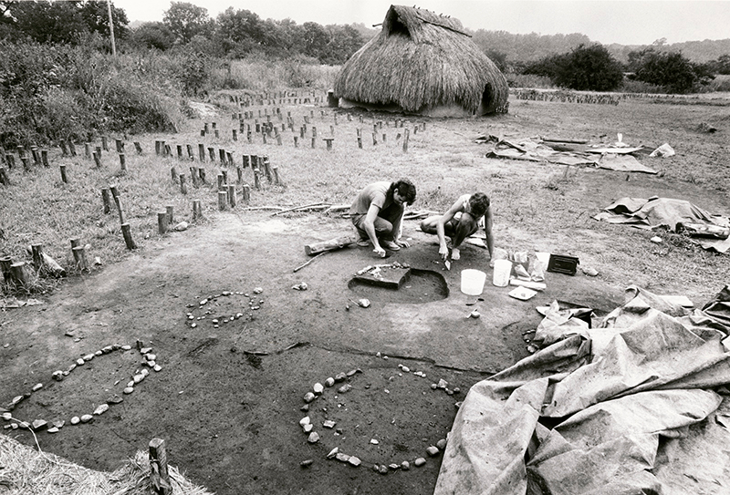

Amateurs had found some prehistoric materials at the site in the 1960s. Professional excavation began in 1972 as a salvage operation when the city planned a sewage treatment plant. With the discovery of significant artifacts and the remains of a stockaded village, the city changed its plans to preserve the site. Excavations continued through 1988 and are generally completed, although additional small studies have been done. The studies have revealed much about the original people's dwellings, social organization, diets, burial practices and other aspects of their lives at the site. The circular village, surrounded by defensive palisades, was occupied for about 25 years, with a total population of about 300. They depended on farming and hunting.
Scholars have named it Star Watch because, since studies of the 1980s, they believe that a complex of posts in the plaza related to astronomical measurements. The Fort Ancient culture people, whose society was based on agriculture, would have planned rituals around a solar calendar.
With reconstructed dwellings, a plaza and gardens, and an interpretive center, the village was opened in 1987 to the public as an open-air museum. Interpretive tours are offered as well as a variety of educational programs and special events developed in collaboration with Native American and other groups. Archaeological excavations are ongoing in the area, with special opportunities for school groups, graduate students, and adult learners.
Additional artifacts and exhibits are held in the related Boorshaft Museum of Discovery in Dayton. These help interpret the history and culture of the people, and show more of the artifacts recovered at the site than can be displayed at StarWatch.
StarWatch Indian Village offers exploration and learning both indoors and out. Visitors will enjoy watching an introductory film in the indoor theater, viewing artifacts and learning about the history of the Village and its inhabitants in the Interpretive Center, and immersing themselves in the 800-year-old lifestyle by visiting the reconstructed structures, located in their original, exact locations. Exhibition dates: April - November
To view hours of operation, click here To Learn about our lecture series, click here